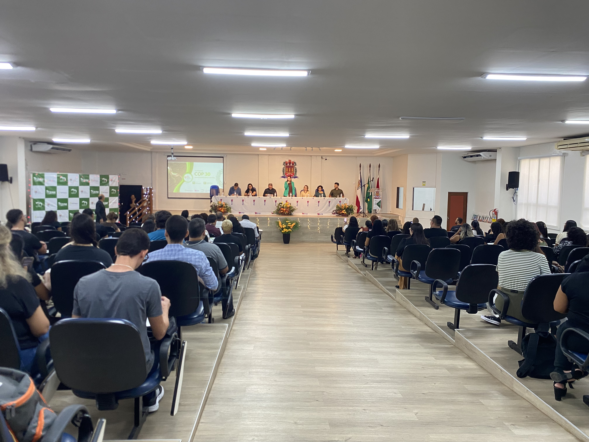
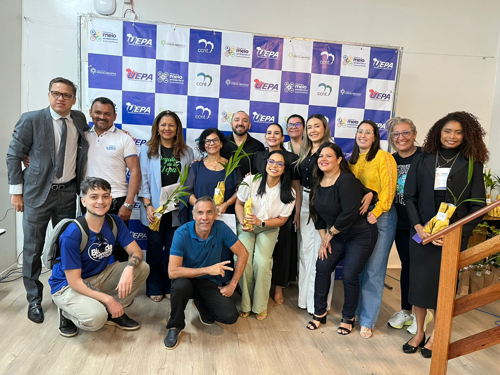
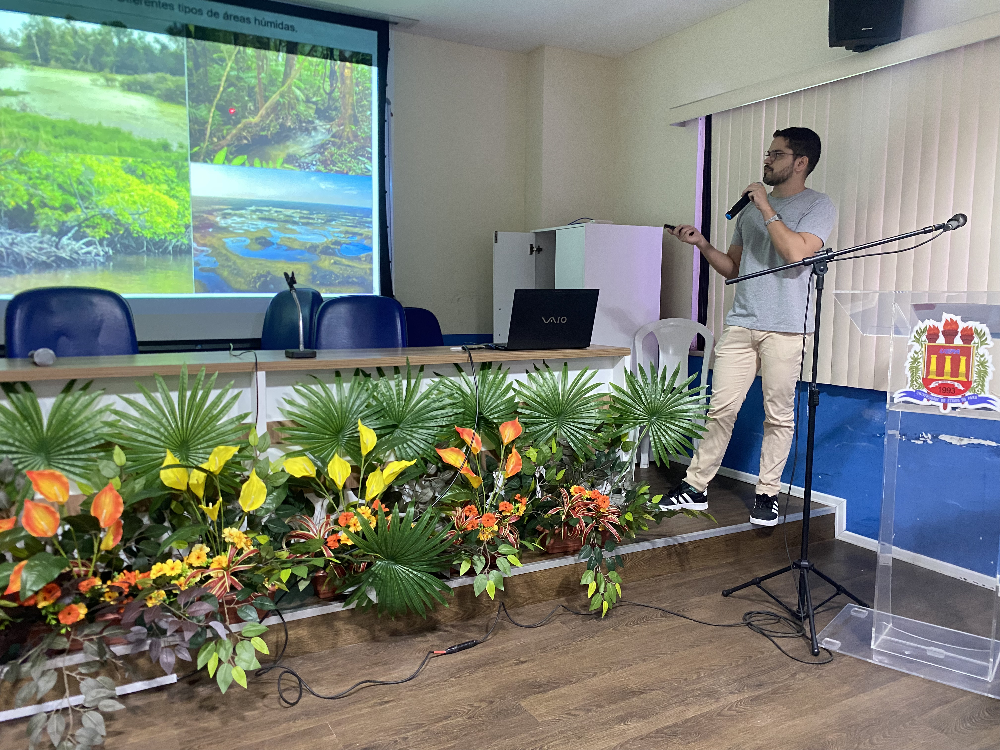
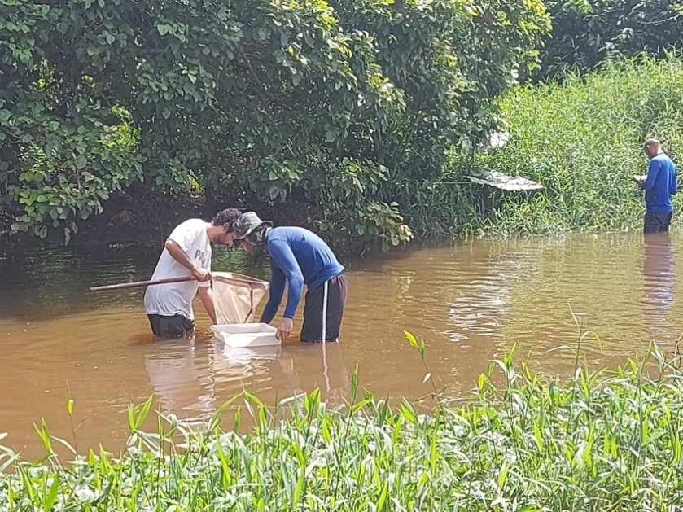
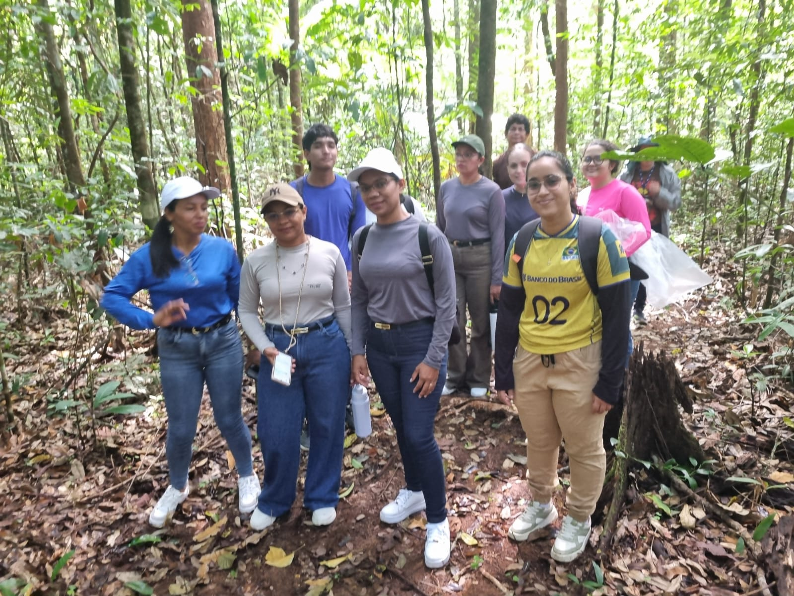
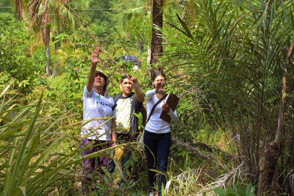

Parcerias que fortalecem a pesquisa, promovem a inovação e geram impacto socioambiental na Amazônia e no mundo.
Eventos promovidos e apoiados pelo PPGCA para a formação e integração da comunidade acadêmica.

O Simpósio de Estudos e Pesquisas em Ciências Ambientais na Amazônia, promovido anualmente pelo PPGCA/UEPA, é um dos principais espaços de divulgação científica e integração acadêmica do Programa. O evento reúne pesquisadores, docentes, discentes e profissionais que atuam em diferentes áreas das Ciências Ambientais.
Ao longo de suas edições, o Simpósio tem contribuído para ampliar a visibilidade das investigações desenvolvidas no PPGCA, promover a troca de experiências entre grupos de pesquisa e incentivar a formação crítica e qualificada de mestrandos e doutorandos. A programação costuma incluir palestras, mesas-redondas, minicursos e sessões de apresentação de trabalhos, consolidando o evento como um momento estratégico para o avanço da produção científica na região.

A Escola de Verão do PPGCA/UEPA é uma iniciativa de formação complementar que busca ampliar o acesso ao conhecimento em Ciências Ambientais por meio de minicursos, oficinas e palestras. O evento é aberto ao público interno e externo à Universidade.
As edições anteriores têm se caracterizado por sua abordagem multidisciplinar, com atividades que vão desde elaboração de projetos de pesquisa e introdução a ferramentas de geotecnologia até discussões sobre políticas ambientais e sustentabilidade. A VIII edição, realizada em 2025, consolidou o evento como um dos principais espaços de formação continuada do Programa, integrando a III Escola de Meio Ambiente e Sustentabilidade. A programação da próxima edição será divulgada em breve.

A Escola de Inverno do PPGCA/UEPA é uma iniciativa de formação complementar que, ao longo de suas edições, se consolidou como espaço importante de capacitação, atualização científica e integração entre estudantes, pesquisadores e profissionais das Ciências Ambientais.
Realizada tradicionalmente em janeiro, a Escola oferece minicursos, oficinas e palestras sobre temas diversos e interdisciplinares, fortalecendo a missão do Programa de promover a difusão do conhecimento e o diálogo com a sociedade. A última edição ocorreu em 2020. A previsão é de que a Escola de Inverno retorne em 2026, retomando seu papel como um dos principais eventos de formação continuada do Programa.
Projetos e ações que promovem transformação social e ambiental.

Envolve comunidades ribeirinhas no monitoramento da qualidade da água e ecossistemas aquáticos.

O PPGCA mantém parcerias ativas com órgãos como SEMAS, IDEFLOR-Bio, IBAMA e ICMBio, integrando pesquisa científica às demandas de gestão ambiental pública na Amazônia.

As aulas de campo integram a formação dos discentes do PPGCA, promovendo o contato direto com os ecossistemas amazônicos e o desenvolvimento de habilidades práticas em pesquisa ambiental.
Ações internacionais que ampliam o alcance da pesquisa e fortalecem a formação dos discentes do PPGCA.
O PPGCA tem avançado consistentemente na inserção internacional de suas atividades acadêmicas e científicas. Nos últimos anos, docentes e discentes do programa participaram de eventos, treinamentos e missões técnicas em diferentes países, estabelecendo interações com instituições de referência mundial nas áreas de geotecnologias, sensoriamento remoto e ciências ambientais. As ações descritas a seguir refletem esse esforço contínuo de internacionalização.
A Profa. Dra. Norma Beltrão foi selecionada pelo DAAD (Serviço Alemão de Intercâmbio Acadêmico) para participar do programa SDG Alumni Projects, que reúne especialistas do Sul Global em seminários temáticos alinhados aos Objetivos de Desenvolvimento Sustentável da ONU. A participação compreendeu dois momentos complementares:
Semana Verde Internacional (IGW) e Fórum Global para Alimentação e Agricultura (GFFA), em Berlim — evento com mais de 90 anos de história, voltado a alimentação, agricultura e sustentabilidade, que reuniu representantes da política, indústria, ciência e sociedade civil para debater segurança alimentar e políticas agrícolas globais.
Treinamento na Universidade de Göttingen (23 a 27 de janeiro) — o programa incluiu seminários com pesquisadores de referência nas áreas de inventário florestal nacional, certificação florestal (PEFC), restauração de paisagens, política florestal e mudanças climáticas, além de excursões técnicas a florestas manejadas na região de Reinhausen e ao Centro de Tecnologia da Madeira da UGOE. A Profa. Norma Beltrão também apresentou o trabalho "Ecosystem services assessment and mapping in a protected area in the Brazilian Amazon", gerando intercâmbio técnico com pesquisadores de múltiplos países.
A ação abriu perspectivas para a aplicação de novas metodologias em gestão ambiental e sensoriamento remoto nas pesquisas do PPGCA e para o estabelecimento de redes de cooperação com instituições europeias.
A doutoranda Lianne Borja Pimenta, orientanda da Profa. Dra. Norma Beltrão, foi contemplada com bolsa CAPES de Doutorado Sanduíche para um estágio de pesquisa de quatro meses no Departamento de Geociências, Ambiente e Ordenamento do Território da Faculdade de Ciências da Universidade do Porto (FCUP), sob coorientação da Profa. Dra. Lia Bárbara Cunha Barata Duarte.
O estágio focou na aplicação de Análise Hierárquica de Processos (AHP) integrada a Sistemas de Informação Geográfica (SIG) para a identificação de áreas suscetíveis a inundações no município de Ananindeua (PA). Como produto direto da pesquisa, foi elaborado o artigo científico "Integrating GIS and AHP for identifying flood-susceptible areas in the urban zone of Ananindeua, Brazil: a case study", submetido à revista internacional Land.
A experiência fortaleceu a colaboração acadêmica entre a UEPA e a Universidade do Porto, além de ampliar a capacidade analítica da pesquisadora com suporte de especialistas internacionais em geotecnologias.
O PPGCA marcou presença no Simpósio Técnico da Comissão III da ISPRS (International Society for Photogrammetry and Remote Sensing) e no Simpósio Latino-Americano de Sensoriamento Remoto (SELPER), realizados em Belém entre 4 e 8 de novembro de 2024. O evento, organizado conjuntamente pelo Brasil e pela França no ciclo 2022–2026, concentrou-se em técnicas de sensoriamento remoto, novas missões espaciais (SWOT, BIOMASS e outras) e aplicações em ciências da Terra, clima e meio ambiente — com ênfase especial na Amazônia.
A Profa. Dra. Norma Beltrão e seus orientandos de doutorado apresentaram dois trabalhos na modalidade pôster:
Dênis Cardoso Gomes, Norma Ely Beltrão, Carla Azevedo Sadeck
Suelen Melo Oliveira, Fernanda Ferreira Machado, Ilale Ferreira Lima, Norma Ely Santos Beltrão
A Profa. Norma Beltrão atuou ainda como Moderadora da Sessão Técnica Urban Areas, coordenando debates sobre dinâmicas urbanas, planejamento territorial e impactos ambientais nas cidades.
Em setembro de 2025, uma delegação da UEPA realizou visita institucional à Faculdade de Geografia e Meio Ambiente da Universidade Normal de Shandong (SDNU), conduzida pelas Profas. Dras. Ilma Pastana e Norma Beltrão (PPGCA/UEPA). A SDNU é uma unidade acadêmica de referência internacional nas Ciências da Terra, com mais de 20 plataformas de pesquisa, infraestrutura laboratorial de ponta em análise ambiental, SIG e simulações climáticas, e produção científica que supera 100 artigos em periódicos de alto impacto por ano.
A agenda foi marcada pela identificação de interesses comuns e pelo mapeamento de possibilidades de colaboração com pesquisadores de diferentes grupos da faculdade. Foram discutidas cinco frentes temáticas com potencial de aplicação à realidade amazônica:
Ciências do Sistema Terrestre e Mudanças GlobaisImpactos climáticos, extremos hidrometeorológicos e modelagem de cenários aplicada à Amazônia.
Geografia Humana e Planejamento RegionalDinâmicas urbanas, redes de cidades e avaliação de políticas públicas.
GeotecnologiasSIG, sensoriamento remoto e cartografia para gestão territorial e ambiental.
Ciência e Engenharia AmbientalQualidade da água, solo e ar; controle de poluição; restauração ecológica em áreas degradadas.
Entre as modalidades de cooperação discutidas estão: projetos bilaterais com financiamento compartilhado; publicações e dossiês temáticos conjuntos; mobilidade acadêmica de docentes e discentes; compartilhamento de dados e metodologias; e a organização de um evento internacional em Belém em 2026, com participação de pesquisadores da SDNU.
O PPGCA participou da edição 2026 do ForestSAT, um dos principais eventos mundiais sobre sensoriamento remoto aplicado a florestas, realizado entre os dias 5 e 7 de maio na Universidade da Flórida (Gainesville, EUA). O congresso reuniu centenas de pesquisadores de todo o mundo e abordou temas como LiDAR orbital e aerotransportado, estimativa de biomassa florestal, monitoramento de perturbações, inteligência artificial aplicada ao inventário florestal e missões espaciais de nova geração (GEDI, BIOMASS, ICESat-2, NISAR).
A Profa. Dra. Norma Beltrão e o doutorando Caio Brito apresentaram dois trabalhos científicos na modalidade pôster presencial, com pesquisas desenvolvidas integralmente no âmbito do PPGCA/UEPA:
Norma Ey Beltrao — University of Para State, Brazil. O estudo integra dados estruturais do LiDAR orbital GEDI e informações espectrais do Sentinel-2 para estimar a biomassa florestal na Reserva Extrativista Arióca Pruanã (Pará, Amazônia Oriental), comparando algoritmos de aprendizado de máquina (RF, XGBoost, LightGBM) e redes neurais convolucionais.
Caio Brito, Norma Ey Beltrao — University of Para State, Brazil. Primeiro estudo detalhado de validação dos produtos GEDI L4A e L4B em florestas densas do Leste da Amazônia, com base em inventário florestal de 21.241 árvores, estabelecendo um protocolo metodológico replicável para monitoramento de carbono florestal.
A participação no ForestSAT 2026 posicionou o PPGCA/UEPA no cenário internacional de pesquisa em sensoriamento remoto florestal, possibilitando o contato direto com grupos de pesquisa de destaque mundial e a divulgação de resultados originais sobre a floresta amazônica para a comunidade científica global.